The Project
Bolt Storm is a dungeon crawler RPG with RTS elements, created by a 25 man team. I was part of the gameplay feature team together with 3 other programmers. I will exclusively cover the most important systems I have created. This game is created using Unreal Engine 4 in (mainly) C++.
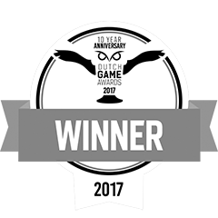 Game Website URL
Game Website URL
Items & Looting
Initially, only weapons and gold could be found and looted. However, I decided to create the system in a flexible way so we could have other types of items later if necesery. Later on we added armor recipes, potions and even treasure chests could be added as special lootables.
An Item is a data asset that consists of some basic essential variables needed for every Lootable. A lootable can be spawned using an item. Another motivation for the item data asset was the fact that we would have an inventory (the inventory was removed later for design reasons).
Items have UseAction which determines what should happen when an item is used. For example: when a weapon is looted, the weapon item is used and the use action in that case will equip the weapon. When it's a health potions, the use action will add health to the player. This way we had the option to store the item in the inventory so it could be used from there as well.
A Lootable is an actor that's spawned using a given item. When the king is in range of a lootable, a UI popup will appear in world space giving some information about the item along with a 3D preview.

Lootables and items can be converted from, and to, eachother.
UI System
We decided the UI in the game had to be more consistent and easier to manage. I designed a system in such a way that it would be flexible enough to support our needs but managed in a way that it's easy to use and hard to missuse.
From then on, the UI would consist of; Windows, Popups, Tooltips and one HUD. All of these exist on a stack (called the WidgetStack). I implemented a couple of rules: Windows can be created on top of windows but never on top of popups, popups can be created on top of anything same as tooltips. All of these inherit from a UIObject base class.
/**
* Creates a window and pushes it onto the widget stack
* @param aUIType The window type to create
* @param aHideHud (optional) Should the hud be hidden while this window exists?
*/
UFUNCTION(BlueprintCallable, Category = "UI System|Manager")
UBsUIWindow* OpenWindow(TSubclassOf<UBsUIWindow> aUIType, bool aHideHud = true);
/**
* Creates a popup and pushes it onto the widget stack*
* @param aUIType The popup type to create
*/
UFUNCTION(BlueprintCallable, Category = "UI System|Manager")
UBsUIPopup* CreatePopup(TSubclassOf<UBsUIPopup> aUIType);
/**
* Creates a tooltip and optionally attaches it to a UI window, uses 1 above the hud layer if no parent window is given.
* Tooltips are not pushed to the stack
* @param aUIType The tooltip to create
* @param aParentWindow The window the tooltip should be parented to, tooltips are managed via windows
*/
UFUNCTION(BlueprintCallable, Category = "UI System|Manager")
UBsUITooltip* CreateTooltip(TSubclassOf<UBsUITooltip> aUIType, UBsUIWindow* aParentWindow);
/**
* Toggles the hud visible/hidden
*/
UFUNCTION(BlueprintCallable, Category = "UI System|Manager")
void ToggleHud();
/**
* Pops the top ui object from the stack (LiFo), this is the only legal way of removing windows and popups (tooltips have to be removed
* @param aDepth (optional) How deep we should pop the widget stack from top to bottom
*/
UFUNCTION(BlueprintCallable, Category = "UI System|Manager")
void PopUI(int32 aDepth = 1);
The UIManager contains all functionality for creating and removing widgets and can be accessed globally. The UIManager contains functions for creating new windows, popups, tooltips and also a method called PopUI which is the only valid way to remove a UIObject. These methods ensure that new UI is always created 1 layer on top of the top widget (and becomes the top widget). The Pop method will pop an x amount of widgets from the stack with a given depth. Transition animations will consistently occur when a UIObject is added or popped. The HUD is always the last widget on the stack and cannot be popped (only hidden).
void ABsUIManager::PopUI(int32 aDepth)
{
for (int i = 0; i < aDepth; i++)
{
if (mUIObjectStack.Num() <= 1)
{
printWarning("Failed to pop UI: only 1 ui object left on the stack (the hud)");
return;
}
UBsUIObjectBase* tPopped = mUIObjectStack.Pop();
if (tPopped->IsA<UBsUIWindow>())
{
mCurrentWindowLayer--;
if (mHudHiders.Contains(tPopped))
{
mHudHiders.Remove(tPopped);
if (mHudHiders.Num() == 0)
{
mHud->SetVisibility(ESlateVisibility::HitTestInvisible);
}
}
}
else if (tPopped->IsA<UBsUIPopup>())
{
mCurrentPopupLayer--;
}
tPopped->OnUIClosed.Broadcast();
tPopped->OnUIClose();
mOutFaders.Add(tPopped);
/* Temporary disable input during fade out */
mPlayerController->SetInputMode(FInputModeGameOnly());
if (BS_VALID(mPlayer))
{
mPlayer->DisableInput(mPlayerController);
}
mPlayerController->ClearActionBindings();
}
}
Because popups are usually very similar to eachother, I created some static utility methods in order to easily add new popups with one function call.
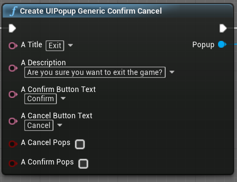 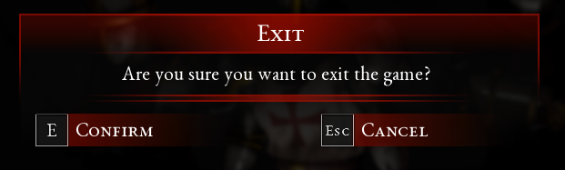I also created a system that would allow the user to easily add a HotkeyButton to a widget. The hotkey button has a "Key" variable for keyboard/mouse and gamepad. When the variables are set in the editor, the button can then be activated using keyboard and gamepad hotkeys for quick navigation by the player. The button image and input binding will automatically change based on the key variables as well.
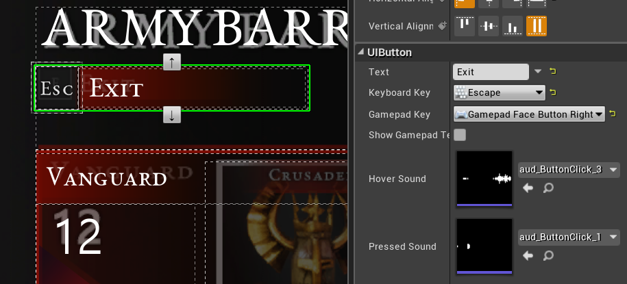Using the new UI system, I've created alot of the UI in the game. As an example of how I use UMG I will show the Settings menu.
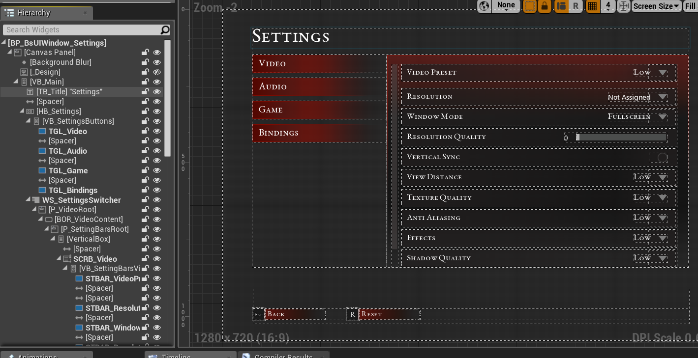Army Barracks
The Army Barracks is the place where the king can purchase new troops to be added to his army. The last iteration uses the new, previously mentioned UI system. It also features a 3D preview of the entire army so the player has an overview of what he will be fighting with.
The barracks is an actor that uses the Interactable interface that allows to easily and consistently create interaction of the king with an object. The interface will show the interact button when in range and an outline of the object. This interface is also used by the item shop, the armory, various gameplay elements in the game such as levers and NPC's.
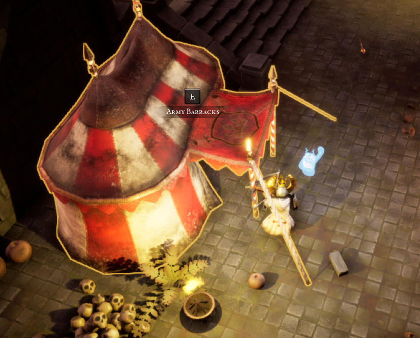In the barracks, the player can select cards and get a preview of the unit and it's stats and abilities. The cards are created and added dynamically using a data asset. This allows designers to easily create new units and add them to the barracks.
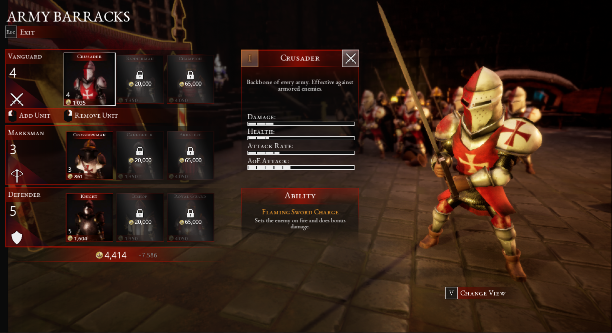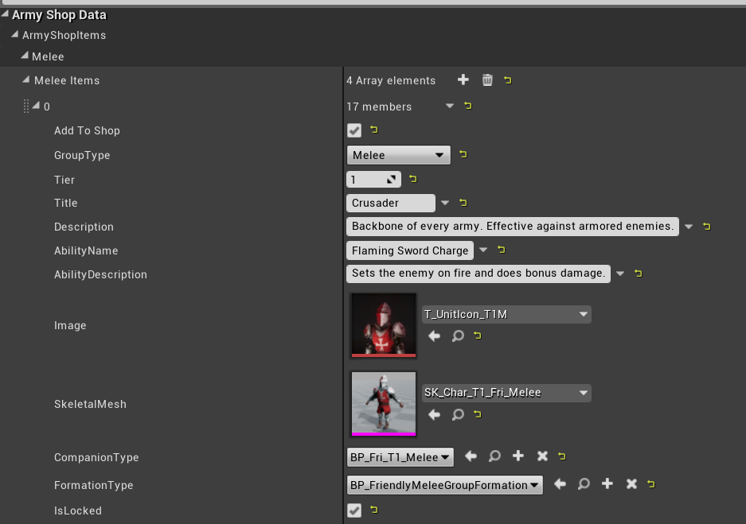The prices in the barracks are determined by a datatable that contains information about every unit. The price's are designed in such a way that the more you buy of a certain type of unit, the more that unit will cost (this is done so the player would have a wider variety of units in it's army). The increase in price is different per unit and is determined using a curve.
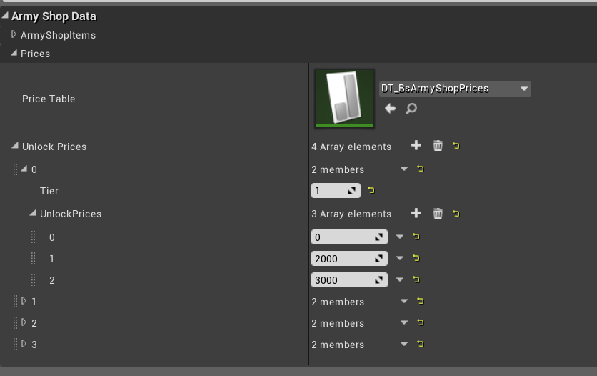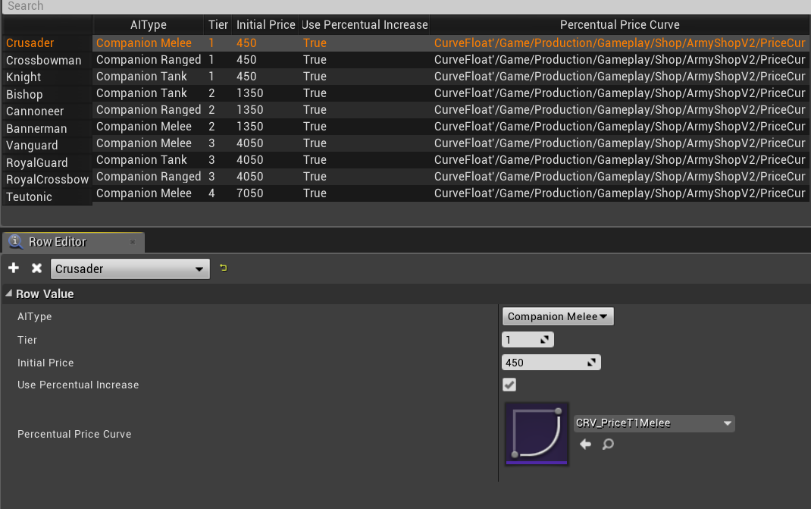Using a hotkey button, the player can toggle between the army overview and the unit view. The army overview places the units in formation and adds/removes them based on the players shopping list.
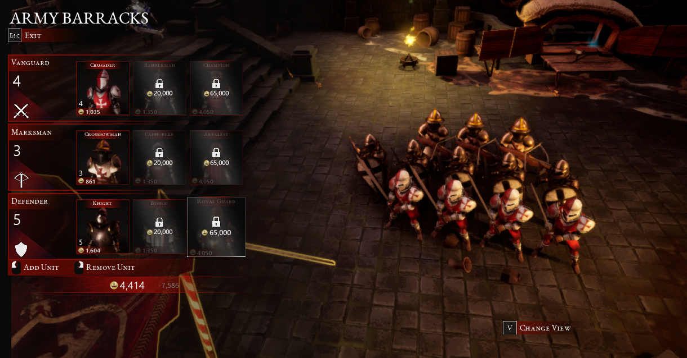